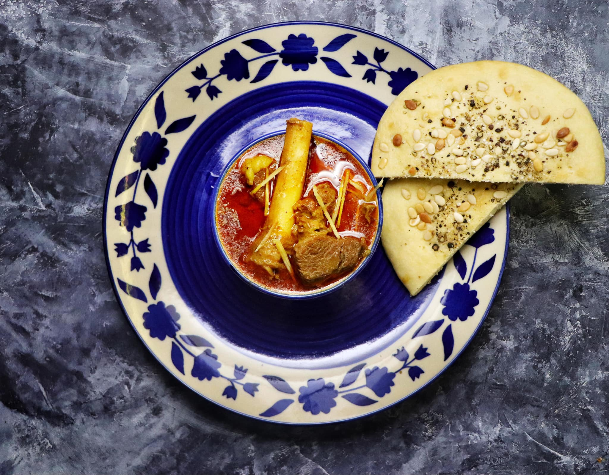

Nihari
Overnight shank stew, thickened with wheat flour and finished with ginger and lime

Contains: milk, gluten
Checked against the ingredient list for ten allergens: milk, egg, fish, crustaceans, tree nuts, peanuts, sesame, mustard, soy and gluten. Brands vary, so read the label on anything new to you.
Ingredients
Quantities for 6.
- 1kg shank on the bone, with marrow Mutton
- 3 tbsp Attathe traditional thickener
- 3, sliced Onion
- 3 tbsp, half paste half julienne Ginger
- 2 tbsp paste Garlic
- 2 tsp Fennel Powder
- 1 tsp Dry Ginger Powder
- 2 tsp Chilli Powder
- 1 tsp Turmeric
- 1 tsp Garam Masala
- 2 Black Cardamomoptional
- 2 pieces Cinnamonoptional
- 2 Bay Leafoptional
- 2 Lemon
- to finish Coriander Leavesoptional
- to finish Green Chillioptional
- 6 tbsp Ghee
- to taste Salt
Cookware
stovetop
Before you start
- Nihari comes from nahar, meaning morning: it was cooked overnight and eaten at dawn. The long, low cook is not optional. It is what turns shank into something spoonable.
- Shank with marrow bones is the cut. Boneless meat makes a curry, not nihari.
Method
- Brown the sliced onion in ghee, then add the ginger and garlic pastes and cook until the raw smell goes.
- Add the powdered spices with a splash of water so they do not scorch, then the mutton. Turn it in the masala over high heat until sealed.
- Add 2 litres of water and the whole spices. Bring to a boil, then drop to the barest simmer, cover, and cook 4-5 hours until the meat slides off the bone.A trembling surface, not a rolling boil. Boiling makes the meat stringy.
- Whisk the atta into a cup of cold water until perfectly smooth and stir it into the pot. Simmer 30 minutes more, stirring often, until the gravy coats a spoon.Cold water and hard whisking, or you will get lumps you cannot remove.
- Rest off the heat 20 minutes; the fat will rise. Do not skim it. That layer is the point.
- Serve with julienned ginger, green chilli, coriander and a hard squeeze of lemon at the table.
Storage
Improves for two days refrigerated and is arguably better on day two. Reheat gently with hot water. Freezes 2 months.
Nutrition Low estimate
High protein: 37 g a serving, 40% of the calories
| Per serving260 g | Per 100 g | |
|---|---|---|
| Calories | 366 kcal | 141 kcal |
| Protein | 36.6 g | 14 g |
| Carbohydrate | 15.8 g | 6 g |
| of which sugars | 2.7 g | 1 g |
| Fibre | 3.3 g | 1 g |
| Fat | 17.3 g | 7 g |
| of which saturated | 9.2 g | 4 g |
| of which unsaturated | 6.6 g | 3 g |
Ingredients given to taste count as zero, so the real figures run a little higher. Nearest database match used for garam masala, mutton. Estimated from raw ingredients using USDA FoodData Central.
Written and checked against sources, not cooked in a test kitchen. Times, yields, allergens and nutrition are worked out rather than measured, so use your own judgement on doneness and on storing. More in About.